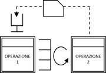
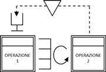
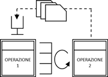

I kanban possono acconsentire la produzione, l’acquisto o la movimentazione dei materiali. Il kanban però può essere distinto in più tipologie che vanno applicate a seconda del contesto di utilizzo.
Kanban
È la tipologia più utilizzata, prevede per un determinato componente un numero di contenitori con una quantità di pezzi predefinita e ad ogni contenitore è associato un kanban per il ripristino. Quando si svuota un contenitore il kanban ad esso associato vale come ordine di ripristino per il fornitore.

Kanban tradizionale in una Value Stream Map
Double bin (Doppio contenitore)
È il modo più semplice per applicare il kanban. Si tratta di predisporre per ogni codice due contenitori con riportate le informazioni del kanban. In questo caso quasi sempre il ruolo del kanban è svolto direttamente dal contenitore: il contenitore vuoto è esso stesso ordine di ripristino per il fornitore.
Nella realtà aziendale il double bin è molto utilizzato come kanban di movimentazione per rifornire di minuterie le linee di assemblaggi e le postazioni di lavoro.
Signal Kanban (Kanban segnale)

Rappresentazione del Signal Kanban nel Value Stream Mapping
Il Signal Kanban è implementato nei sistemi produttivi quando il lotto di produzione del fornitore è grande rispetto ai consumi del cliente. Il signal kanban ripropone in maniera visuale e fisica la politica di approvvigionamento con punto di riordino. Il kanban non è più associato ad un contenitore ma viene inviato al fornitore solo dopo che si è consumato un certo numero di contenitori o pezzi.
Batch Kanban (Lotto di kanban)
Il batch kanban è implementato nei sistemi produttivi quando il lotto di produzione del fornitore è grande rispetto ai consumi del cliente. Il batch kanban è strutturato come il kanban normale con l’unica differenza che il fornitore prima di poter produrre attende l’accumulo di un certo quantitativo di cartellini per quel codice.
Questo tipo di kanban prevede l’utilizzo di tabelloni appositi per l’accumulo dei cartellini kanban in colonne suddivise per codice. Spesso su questi tabelloni le colonne sono divise in 3 aree che si riempiono in successione:
Zona verde: finché con i kanban non ho riempito la zona verde e sono entrato in quella gialla non posso produrre quel componete
Zona gialla: una volta che i kanban iniziano a riempiere la zona il fornitore può mettere in produzione quel codice
Zona rossa: appena un kanban viene posizionato in zona rossa il fornitore deve immediatamente mettere in produzione quel componente

Rappresentazione del Batch Kanban nel Value Stream Mapping
Kanban di capacità produttiva
Il Kanban di capacità produttiva indica la disponibilità di un certo ammontare di capacità produttiva nel sistema. A differenza del Kanban tradizionale dove il cartellino richiama la produzione di una ben determinata quantità di pezzi da produrre di un certo codice, il Kanban di capacità produttiva indica semplicemente la disponibilità di capacità produttiva senza specificare cosa produrre.
Questo sistema può essere impiegato dai terzisti che non producono a catalogo e dalle aziende che operano su commessa per gestire il flusso di lavoro.